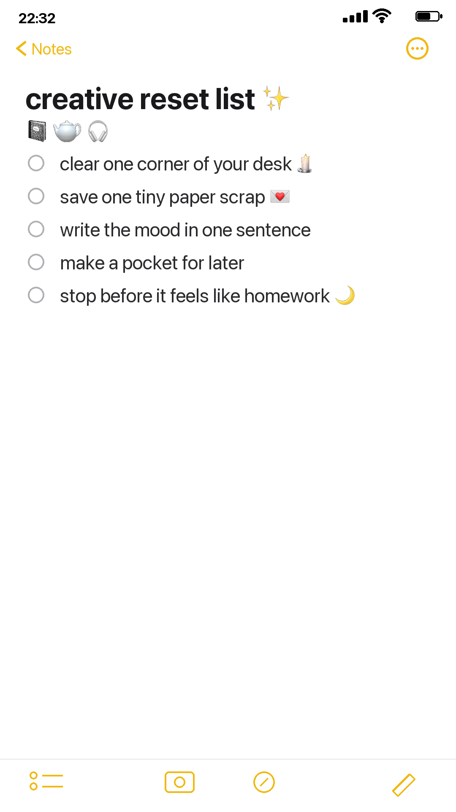

Some days the problem is not that you have no ideas. It is that every idea is talking at once. The desk is full, the page is half-started, the supplies are too visible, and suddenly the thing that was supposed to feel calming starts to feel like another task.
A creative reset is not a deep clean. It is not a new system. It is a small pause that makes the room quiet enough for one next step.
Start by clearing one corner
Do not clean the whole desk. That is how a ten-minute reset becomes an afternoon of rearranging drawers. Pick one corner and make it calm.
Move the empty cup. Stack the loose papers. Put the scissors, glue, and pens into one little pile. Leave out only what belongs to the next twenty minutes: one journal, one pen, one paper scrap, and maybe something soft like ribbon, lace, or a pressed flower.
The goal is not minimalism. The goal is one visible place where your eyes can rest.
Save one tiny paper scrap
Choose one piece of paper that feels like it has a pulse. It can be a receipt, a wrapper, a note, a torn envelope, a bus ticket, a label, or the edge of a page you almost threw away.
Tape it down without trying to make it perfect. Let it be crooked. Let it look found. A reset page works best when it feels like the beginning of a conversation, not a final design.

Write the mood in one sentence
When your brain feels crowded, long journaling can feel too heavy. Try one sentence instead.
- The room feels loud, but this corner is quiet.
- I am starting again without making it dramatic.
- Today only needs one small beautiful thing.
- I do not have to finish the page to return to myself.
One sentence is enough to make the page personal. It tells future you what this little cluster of paper meant.
Make a pocket for later
If you still feel stuck, make a pocket. Fold a scrap of paper, tape down three sides, and leave the top open. Put something inside: a receipt, a tiny note, a ribbon end, a photo, a word you cut from packaging.
Pockets are useful because they remove pressure. You do not have to know where everything belongs yet. You can tuck the thought away and let it become part of the page later.
Stop before it becomes homework
This is the most important part. Stop while the page still feels light.
Close the journal before you start judging it. Leave the pen nearby. Let the half-finished page be an invitation instead of a problem. Creative momentum often comes back faster when you do not use all of it at once.
A reset is not about producing something impressive. It is about making a small place where your attention can return.
If the desk is still messy afterward, that is fine. One quiet corner is enough.